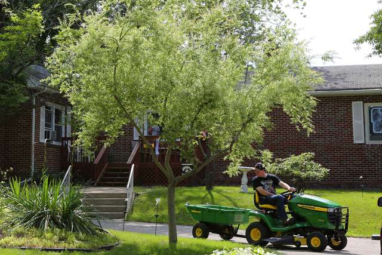
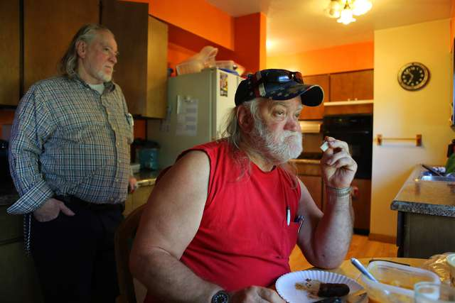
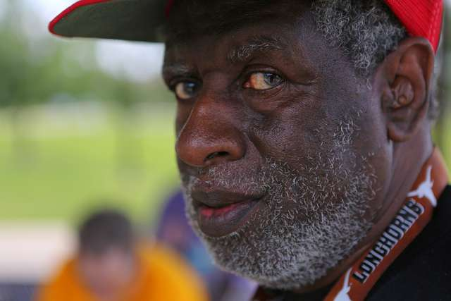

Today
The Route 1 bus continues its heave-and-sigh through Waterloo, passing strip malls and golf courses and dozens of side streets, down which thousands of ordinary lives unfold.
In an off-white house with a generous backyard, the late-morning air hints of fried eggs and strong coffee. Henry Wilkins, 69, is working on a needlepoint pattern of the Chicago Cubs logo in his bedroom. On the dresser sits a photograph of him conquering the Log Ride at Adventureland near Des Moines, bony arms raised in joy.
Down to 115 pounds when he was rescued, the gangly Mr. Wilkins has regained weight, but he has emphysema and some trouble walking. If he still has relatives in Texas, he says with a half-smile, heaven only knows where they're at.

A backyard gardener and a Nascar fan, he recently decided to shake things up by having his gray hair colored red. He sat in the dining room, a towel draping his shoulders, while a social worker applied the bold dye.
"Autumn," he says, modeling his new punk look.
The Penner brothers, both with saucer eyes and straggly gray hair, are finishing their coffee in the Folgers-perfumed kitchen, where containers of classic roast fill a cabinet. Coffee, their drink of leisure, matters.
Billy, 69, the more talkative brother, keeps nine pens in his shirt pocket and a ring of many keys jangling from his belt; he likes to be seen as in charge. After decades of pulling feathers from freshly dead birds, he says, he is happy to be doing nothing.
Robert, 64, who spent half his life pulling guts, cleans up at a local pizza parlor. The yellow Atalissa T-shirt that he wears, from a long-ago town celebration, is misleading. Deeply traumatized by his time in that town, social workers say, he often lets his older sibling speak for them both.
Their parents and younger sister are dead. But a couple of years ago, their older brother, Wesley - whom they haven't seen "in two dog ages," Billy says - mailed them photo albums filled with black-and-white snaps of their boyhood in Abilene, posing like Wally and the Beaver in front of big sedans, in that time before being sent away.
"You want some more coffee?" Billy asks, holding up a coffee mug.
"Nah, I'm fine," Robert answers.
"Guess I'll wash them out then."

The fraternal conversation turns to dinner options.
Not far away, in a tan split-level house, Willie Levi prepares for a date with his girlfriend, Rose Short, who also has an intellectual disability. Dinner first, then maybe some dancing.
Mr. Levi, 67, is wearing an orange shirt, a red St. Louis Cardinals cap and a pair of red-and-black basketball shorts. Two plastic spoons are tucked in a high black sock, in case someone calls for music. He can also do a turkey gobble that goes right through you.
After his rescue, Mr. Levi underwent surgery for a broken kneecap and counseling for other damaged parts; he hasn't had contact with a family member in decades. But he has found a rhythm in life that includes a weekly date with Ms. Short, who keeps her black hair short.
An Exceptional Persons staff member drives the couple to a sports-centric grill in Cedar Falls, then leaves them to themselves. Sitting side by side in a booth, they order cheeseburgers and fries, a Diet Pepsi for her, a root beer for him.
As televisions blare and children quarrel over foosball, Mr. Levi and Ms. Short talk about their favorite subject, birthdays. She once gave him a Jeff Gordon T-shirt, and he once bought her perfume at JCPenney.
The two friends split the bill. Using his debit card, Mr. Levi pays his share and leaves a dollar tip.
"It's too late for the dance," Ms. Short says.
"Yep," Mr. Levi says.
"Raining," she says.
"Yeah," he agrees. "It's raining."
The Route 1 bus lumbers on. Its passengers include a scowling man in a sleeveless Iowa Hawkeyes T-shirt, a young woman in a Burger King uniform and Gene Berg. Just another working stiff, with a lunch bag in his lap and a faint scar on his wrist, marking where surgery repaired what pulling guts had damaged.

Mr. Berg has never returned to the ranch in Goldthwaite, where Kenneth Henry now clatters his walker down the darkened hall of the never-completed retirement home, wishing that he had done some things differently, but still very proud of how his company empowered the men.
"They were paying their own way, they were holding down a job, and they weren't depending on the government," he says. And yes, he says, he misses the "boys."
"It's like children. You know?"
Mr. Henry says he is appealing the unfavorable verdict in the E.E.O.C. case. As for all those lawyers and social workers and "bureaucrats" who say the company exploited the men - well, he says, they were hoodwinked.
"They got conned," he says. "Some guys with I.Q.s of 60 and 70 conned them, and they never even knew it."
Mr. Berg has also never returned to Atalissa, where old friends like Vada Baker, who once learned the Texas two-step from the men, harbor guilt about telltale signs missed or maybe ignored. "I hope God forgives me," she says.
The convenience store, where so many Honey Buns and Mountain Dews were bought, is shuttered. The Lutheran church, where the Lord's Prayer was hummed, has no pastor. And the town hopes one day to knock down that old schoolhouse on the hill.
"Out of sight, out of mind, maybe," Mr. Hepker says. "We just need to get rid of it."
End of the line, downtown Waterloo. Mr. Berg says goodbye to the driver and walks along Sycamore Street. Past the Paradise Cafe. Past the convenience store where he sometimes buys a soda.
This afternoon he will return by bus to his home on the cul-de-sac, where he lives with two friends from the old schoolhouse, James Fowler and Kenny Jackson. Atalissa rarely comes up.
Tonight, Mr. Berg will most likely call his mother in Kansas on his cellphone. He might mow the lawn with his new John Deere. He might go out for dinner, or just throw a steak on the gas grill that he bought with his earnings. He hasn't decided, he says, but it's his to decide.
"It's a new world," he says. "You do what you want to do."
First, though, Gene Berg has a shift to work, washing dishes at the Black Hawk County Sheriff's Office. He walks into the building, flashes his identification badge, and is waved in.